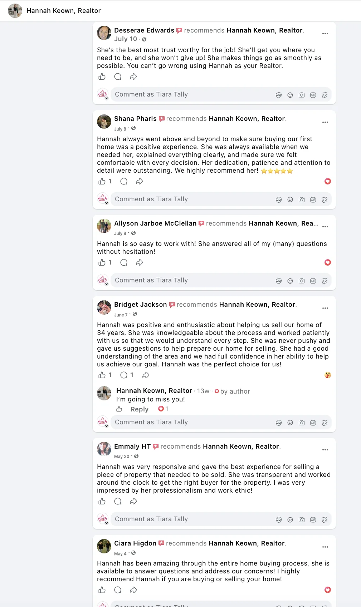
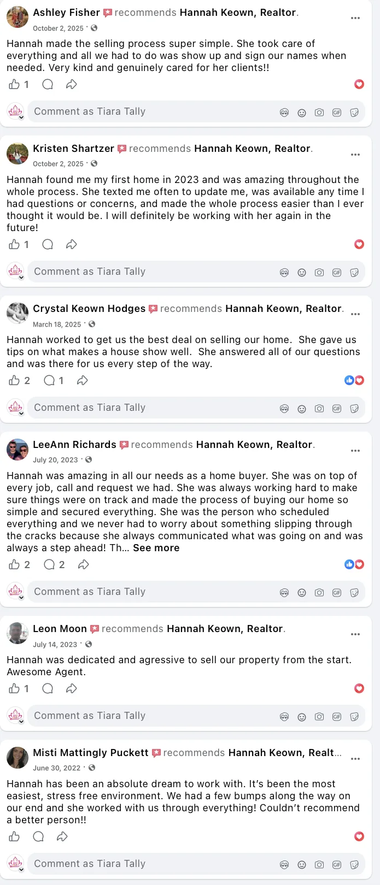
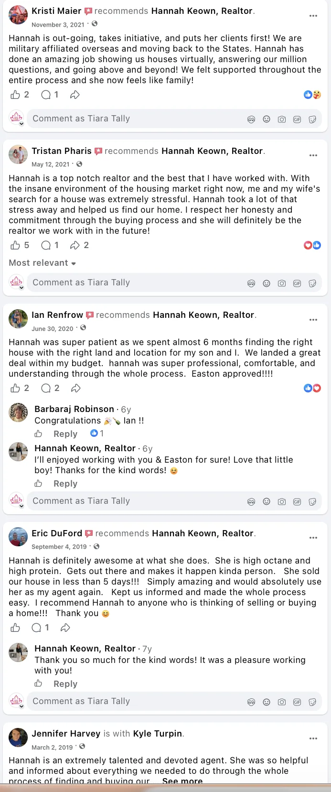
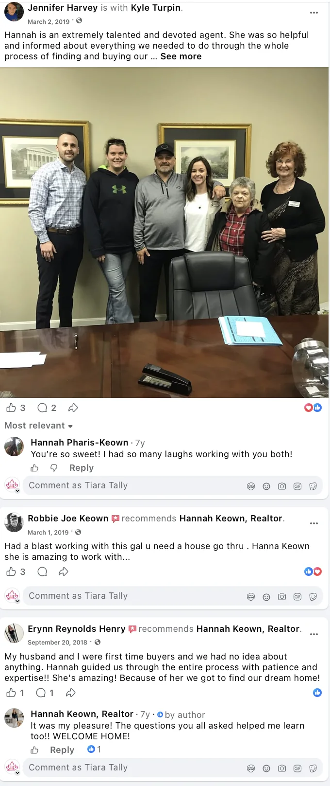

Client Testimonials
What clients remember after closing.
These recommendations were shared by people Hannah has helped buy, sell, relocate, and navigate the unexpected parts of a real estate transaction.
Client recommendations
Kind words, shared publicly.
The screenshots below preserve the original wording and context of recommendations posted to Hannah’s Facebook page.




Independent profiles
Read reviews where they were shared.
Open Hannah’s business and real-estate profiles to see current recommendations and profile information.